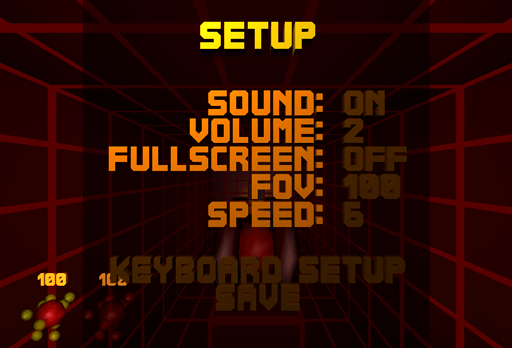
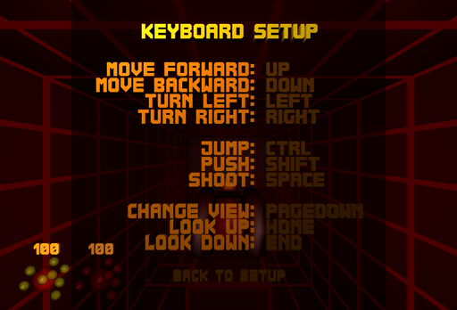
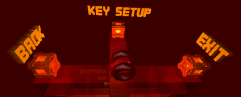
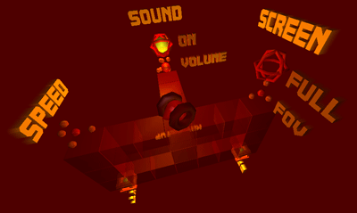
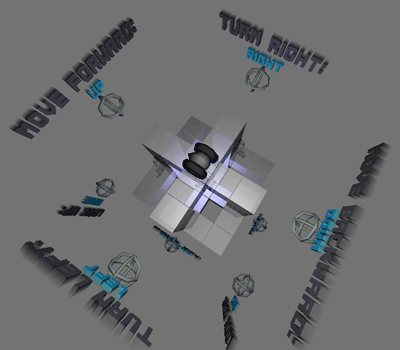

You may enter the setup anytime by pressing ESC
and choosing SETUP in the appearing menu.

Use the UP and DOWN keys to
select an option and ENTER or SPACE
to change the value of the selected option.
Save
If you want to make your changes persistent, you have to select
and activate SAVE before you quit the game.
Keyboard Setup

To change the key for a certain action, select it with the UP
and DOWN keys, press ENTER or
SPACE and the new key afterwards.
You won't be able to leave the keyboard setup if there are actions
without a key assigned.
In the first versions of the game there was no simple setup menu
available. You had to use the Setup World instead.
But I removed it, because some people found it too complicated.
I still like the idea, that's why I display some images here.
May it rest in peace :-)


